竹海十家
心学集章记
阳明文化与竹海融合的深度体验旅游产品设计运营方案
把王阳明在和平县真实推行过的「十家牌法」，从一段写在纸上的制度史， 变成一条游客可以走完、可以盖章、可以带走的竹林游线。

背景与调研
项目起于一个很具体的落差：翠山竹海是华南最大的毛竹林，脚下踩着王阳明设县的土地， 但大多数人开车两小时到这里，拍完照就走——平均停留不到半天，景区一年只留下 10 万人次。
项目所在地位于河源市和平县阳明镇翠山村。1518 年，王阳明平定浰头后上疏奏请设立和平县， 这座县城的行政区划起点与他直接相关；县内如今已有阳明镇、阳明中学、阳明大桥与「两馆一园一区」的文化矩阵。 翠山竹海核心竹林覆盖 30 多平方公里、覆盖率 83.5%，是华南地区最大的毛竹林。
政策层面有三重叠加：广东推进环万绿湖「湖泊+」绿色发展区；河源构建「1+3+4+N」市域格局， 把和平县列为四大县域增长极之一；和平县明确以「阳明古郡」为文化底色，打造「岭南客家竹乡文旅名镇」。 文化资源和生态资源都在，缺的是把它们连起来的产品。
我们的调研分三步：先做政策与区域竞品的案头梳理，再进入场地做资源分级和现状评估， 最后用四类客群画像去校验产品假设——每一处场景，都要能回答「谁会来、为什么来、来了做什么」。
华南最大毛竹林
生态本底完整
以观光型顺访为主
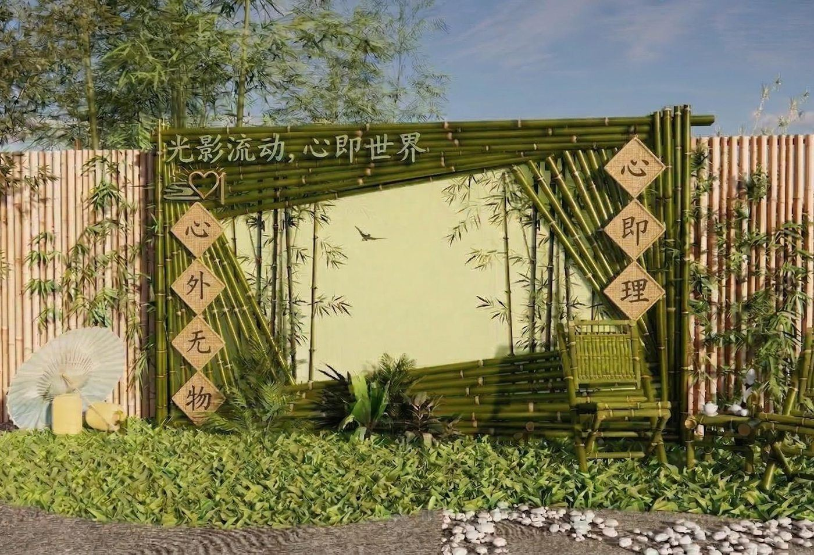
翠山竹海真正要防的风险不是文化不够，而是文化太满、表达太轻。 ——方案「现状评估」结论
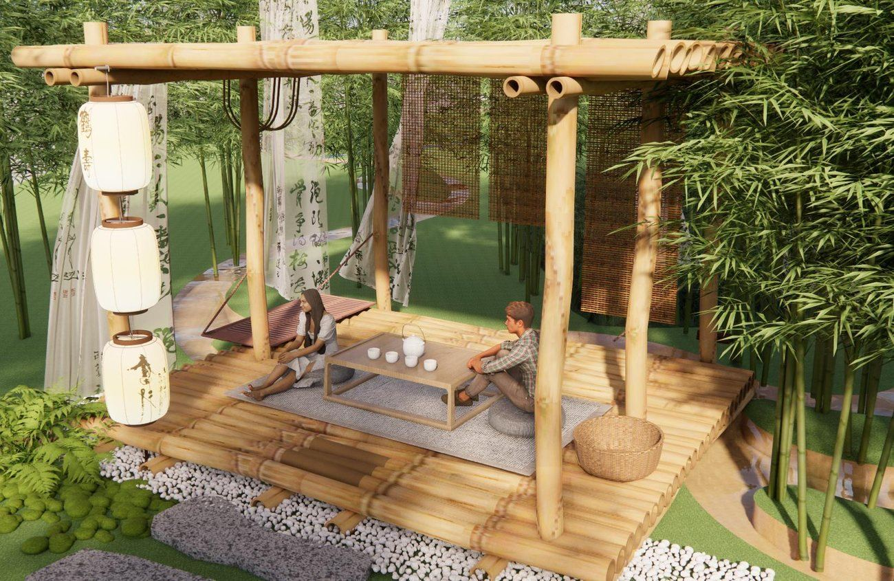
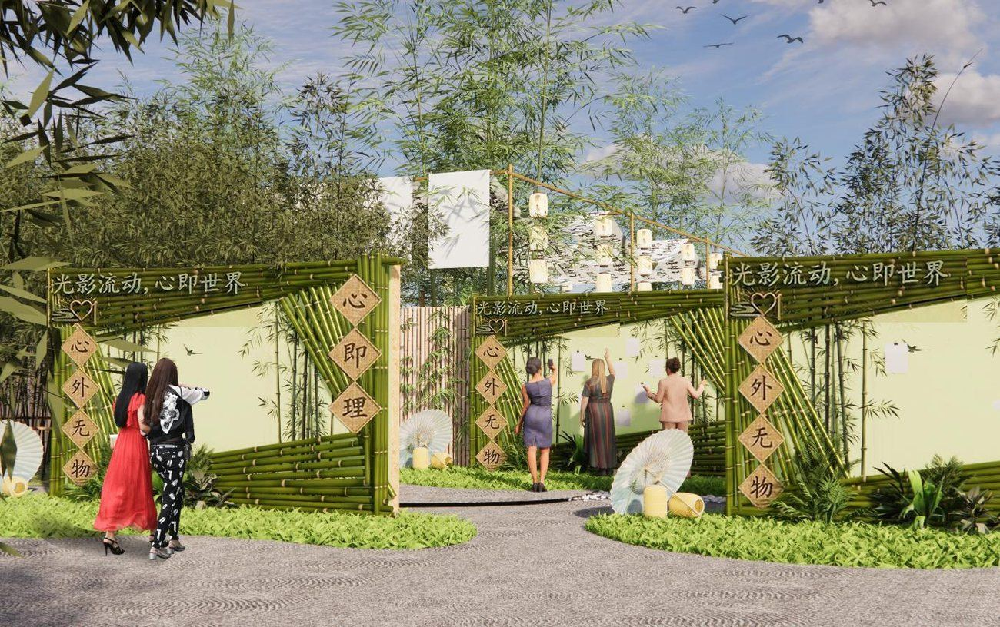
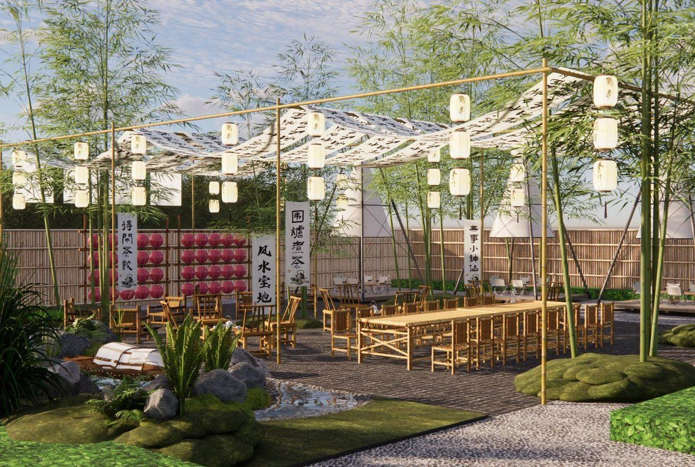
痛点
我们把现场问题收敛成三组矛盾：有资源没有产品、有文化没有场景、有流量没有留存。 它们不是并列的，而是互为因果——产品单一导致停留短，停留短又让二次消费无从发生。
有资源，无产品
近 30 万亩竹海与阳明文化遗存并存，却没有可体验的文旅产品，资源优势无法转化。
景区同质化，文化辨识度低
周边以观光、康养为主，缺少差异化标签，游客记不住「为什么是这里」。
产品单一，内部游线单调
以静态观光为主，缺乏沉浸式与互动项目，动线短、节点之间缺少叙事关系。
未形成核心文旅 IP
阳明文化停留在「讲王阳明」，没有转化为可视、可带走的符号系统。
服务与配套不足
具备「快进」条件，但内部「慢游」体系、研学接待能力与峰值承载数据仍需补齐。
资源利用低效
夜间、淡季、林下空间基本闲置，缺少能延长停留时间与复游率的业态。
痛点分析里有一句话被反复引用：「不是文化不够，是表达太轻」。 所以我们把设计目标定得很克制——不新建一座文化馆，而是把文化节点散点式植入既有的竹林地貌， 用轻设施、低造价的方式，让文化成为走路时自然遇见的东西。
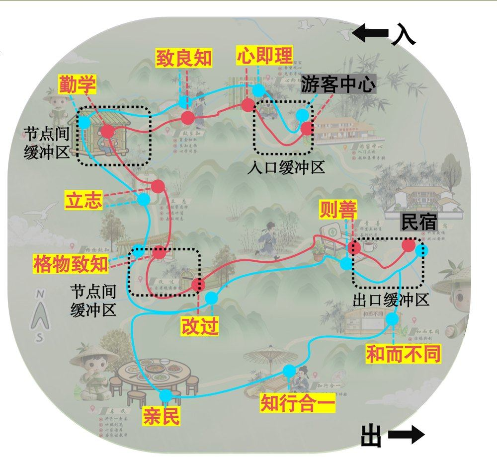
核心理念
整份方案只解决一个问题：怎么让一套 500 年前的乡治制度，变成今天的游客愿意花三小时走完的体验。 答案是给它一个可握在手里的载体。
一核——十家牌手册。它是整条游线的统一入口：既是叙事引导，也是任务分发，还是身份认证。 十家牌法规定每十家为一牌、牌上登记丁口籍贯、轮值巡查；我们把这套「登记—轮值—互助」的结构， 翻译成「领牌—集章—互助解锁」的游客行为。
双轨——物理轨道与叙事轨道并行。竹海生态构成行走的物理空间，心学故事构成理解的叙事线索， 两条轨在每个节点交汇，走一步、读一句。
三融——制度融、空间融、文化融。制度融解决「玩法从哪来」， 空间融解决「场景在哪里」，文化融解决「符号长什么样」。三者互为支撑，缺一个就会退化成主题公园。
核心理念的另一半是克制。方案明确写了三条原则： 不建集中式文化馆、不做大规模土建、不滥用文化符号。 所有设施以竹材等环保材料为主，节点采用「小而美」的基础改造—— 一块立牌、一盏灯、一处可坐下的茶席，就构成一个可停留的场景。
这决定了成本的量级：整个项目的工程建安指标控制在 1.2 亿元， 并以「一期打底、二期成势、三期输出」的节奏分期投入，避免一次性重资产压垮现金流。
我们把它反向使用：连坐变成互助，登记变成集章，巡查变成游线。 ——制度融的核心动作：把管控机制改写成协作机制
方案框架
十个节点，对应王阳明心学的十个核心理念。节点不是平均用力：快游线 2–3 小时串核心， 慢游线一整天走全，节奏由游客自己决定。
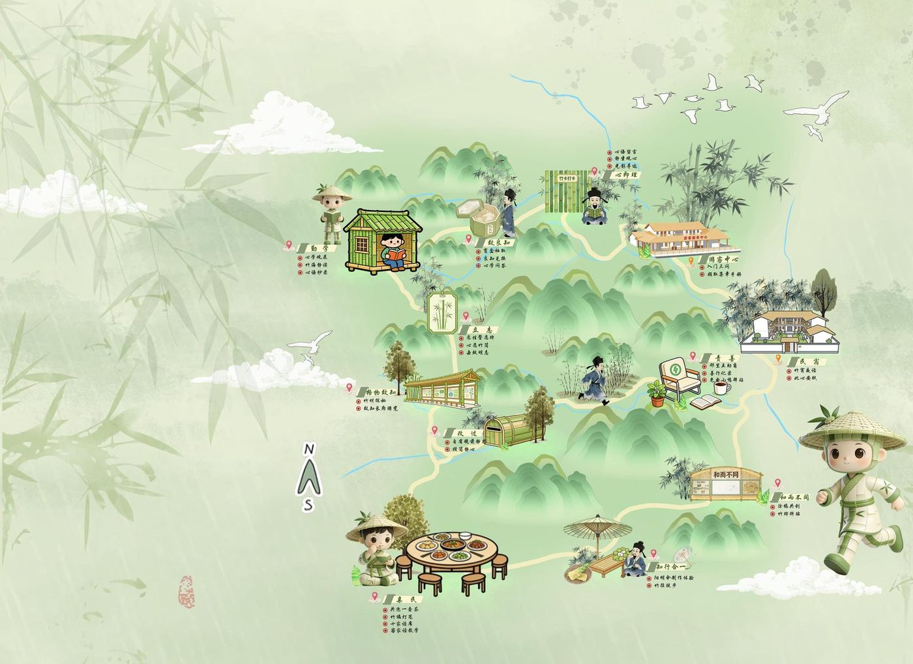
快游线（2–3 小时）：心即理 → 致良知 → 勤学 → 立志 → 格物致知 → 改过 → 责善， 串联核心节点，适合顺访与团队团建。
慢游线（一整天）：走完全部十家，含夜间光影段。 集齐 10 枚印章可兑换阳明纪念文创或十家团购券——奖励不是终点，是让「走完」这件事有反馈。
互助机制是这套玩法里我最喜欢的一处设计：游线中设有「互助点」， 小组必须帮助另一组完成任务才能解锁后续节点。十家牌法原本是连坐制度， 我们把它反向使用，变成协作的理由。
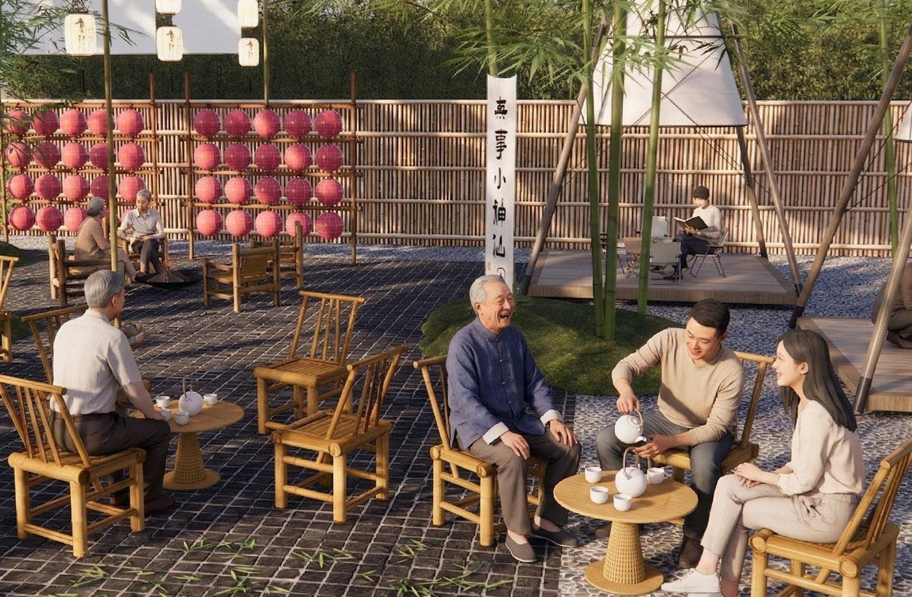
设计产出
产出分三层：空间层是效果图与平面图，符号层是十枚印章，产品层是文创与民宿风貌导则。 它们共用一个视觉语言——竹青、宣纸、朱砂。

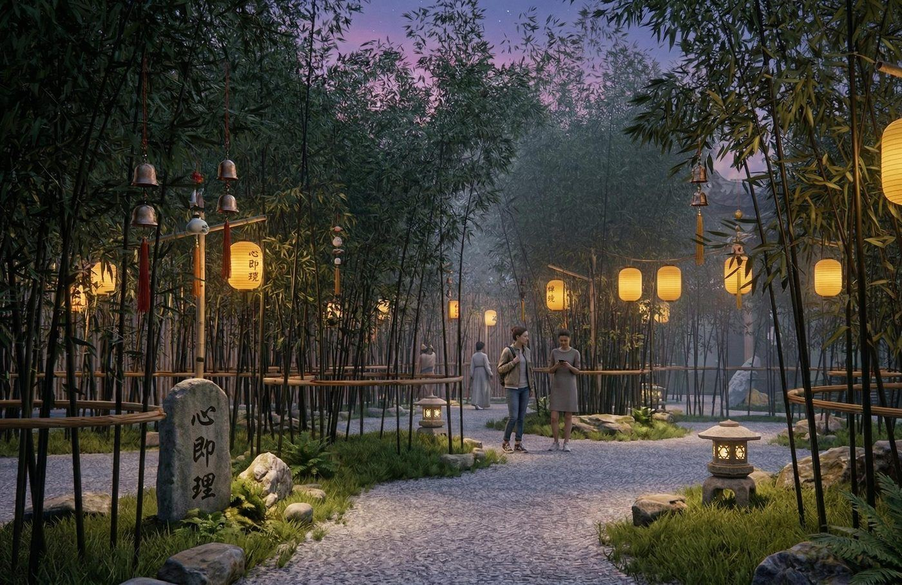
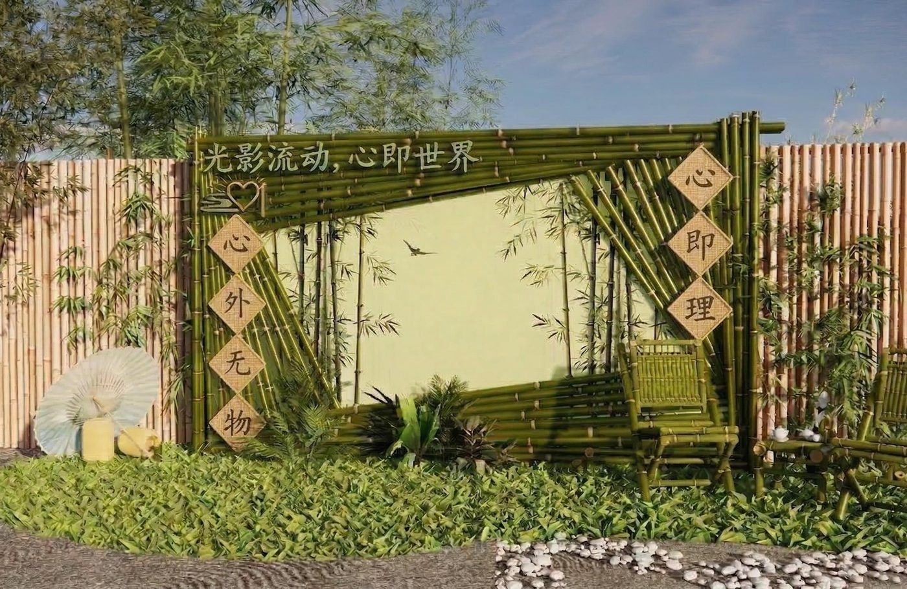
十枚印章对应十个节点，是整套方案里最「可带走」的部分。 每一枚都从《传习录》原句出发，把抽象命题折成一个人形： 「心即理」是打坐的人，中心是篆体的「心」，背景放射线取自阳光穿过竹隙的一束光； 「致良知」用竖排九叠篆变体，把三个字层层盘叠，像古代官印一样庄重； 「勤学」的印面整体塑成竹节形，对应翠山的竹。
这套印章同时承担三个功能：集章打卡的凭证、文创商品的载体、线上传播的视觉符号。 一枚印章，就是一次内容的封装。
设计上我坚持用了朱砂红，而没有跟随项目整体的竹青主色—— 因为印章的功能是「留下痕迹」，红色在宣纸上才有落印的真实感。 印面统一方形或长条形，边缘保留手工刻制的微小不规则，避免过于精准的矢量感。
心即理 · 致良知 · 勤学 · 立志 · 格物致知 · 改过 · 责善 · 和而不同 · 知行合一 · 亲民

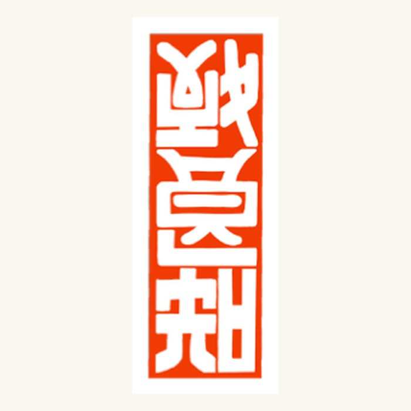
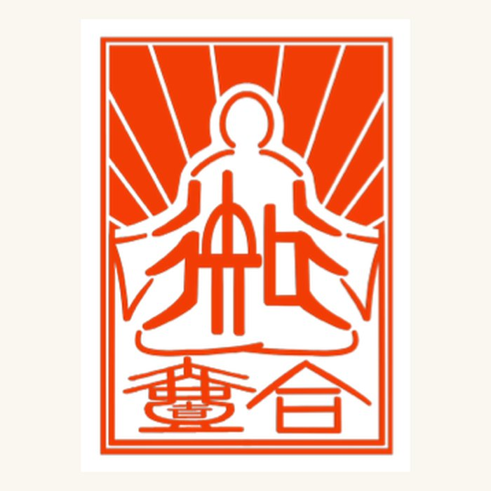
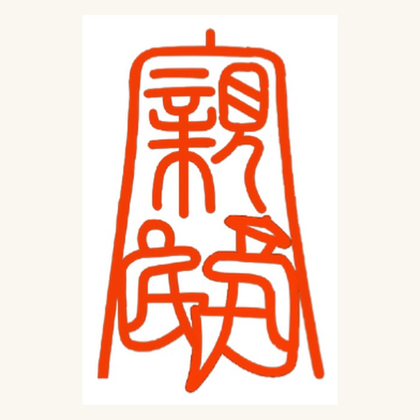
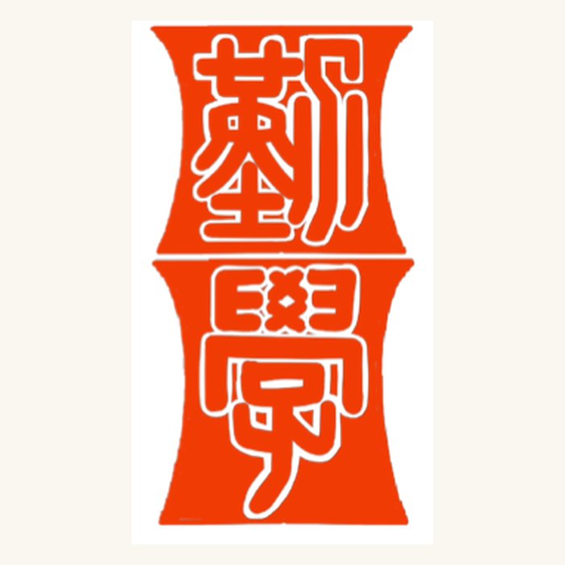
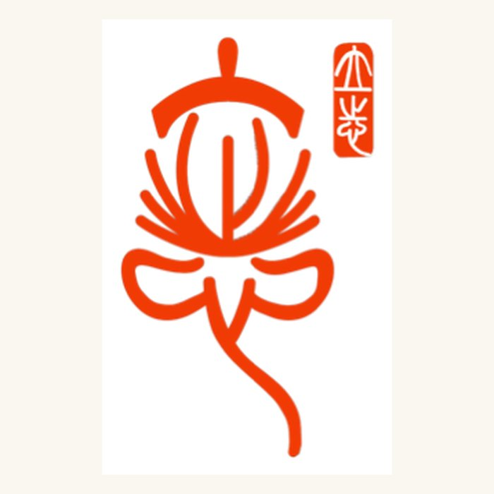
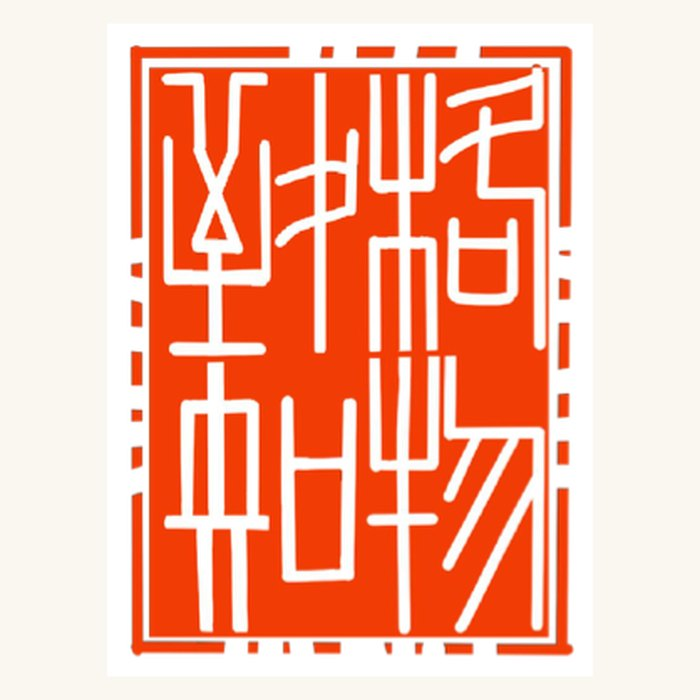
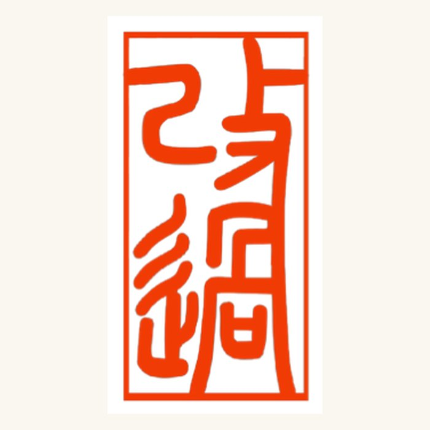
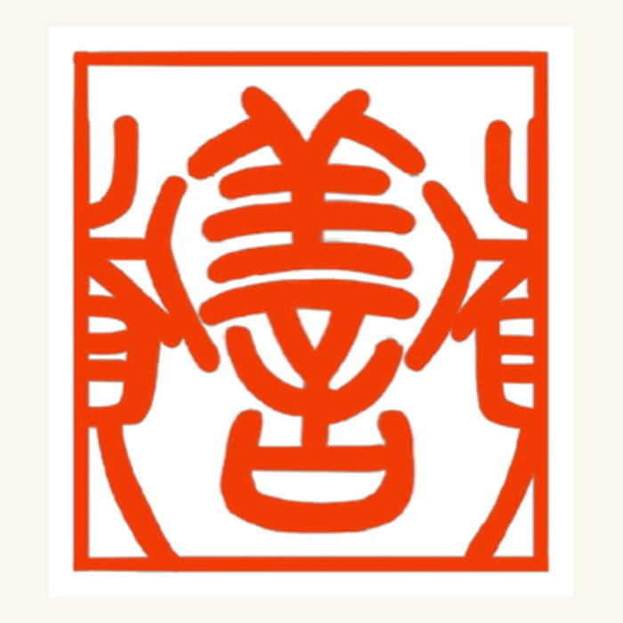
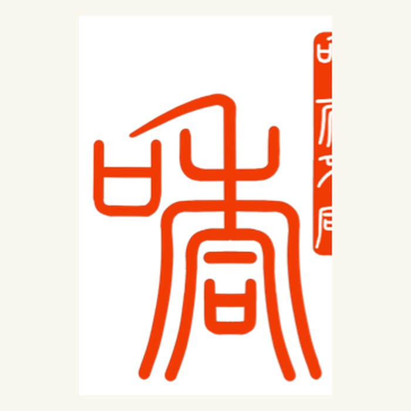
十家牌手册是游线的实体化入口。设计上参考明代烟户册的版式： 内页按「牌」编号，留出集章位与手写信息栏，封面用竹纤维纸压纹。 游客领牌时登记基本信息，与十家牌法「登记丁口」的动作形成呼应。
文创线按使用场景分四类：日常提醒物（笔记本、竹简书签、明信片）、 手作体验类（印章套装、竹编 DIY 材料包、竹简书写包）、 生活器物类（竹茶具、竹香器具、竹编摆件）、礼赠收藏类（节气心学礼盒、竹雕语录摆件）。
导视系统延续同一套语汇：所有标识以竹片为载体、篆体为字， 节点入口用一句心学原句代替编号，编号退到角落。 这样游客先读到一句话，再意识到这是一个「第几站」。
民宿风貌导则则控制在「低成本轻改造」： 夯土墙面、灰瓦覆顶、竹片拼贴门头，村民不需要大改动，也能统一景区气质。
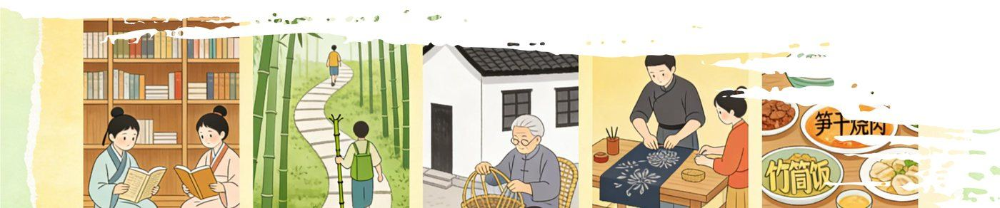
成果
方案完成度是它最有价值的部分：不只是一组好看的图，而是把投资、运营、分期都算过一遍， 能直接交给地方政府或运营方讨论落地。
第十五届「挑战杯」
广东大学生创业计划竞赛
河源「百千万工程」专项赛 · 省级三等奖
151 页完整方案文本
含背景分析、资源评估、战略定位、产品服务、运营实施五大部分
投资与运营测算
工程建安 1.2 亿元；文化体验类五年收益约 980 万元，年复合增长约 24%
我在这份方案里做了什么。
前期：区域市场分析、竞品对比、四类客群画像与消费动因梳理； 翠山竹海的区位、资源分级与现状评估。
中期：主题定位与「一核双轨三融」框架的形成、六大痛点归纳、空间节点的心学命题对应关系。
后期：印章视觉概念与十枚印章的图形设计、场景效果图的部分制作、方案文本的成稿与统稿。
如果继续做下去。
方案目前停在「可讨论」的程度，还没进入施工与运营。 下一步最该补的是两件事：一是峰值承载量的实测数据， 二是村民参与机制的具体协议——后者在同类乡村文旅项目里往往是最容易翻车的地方。
这个项目也直接影响了我后来做的龙湖古寨研究： 我开始更在意「文化有没有真的被读懂」，而不只是「有没有被设计出来」。